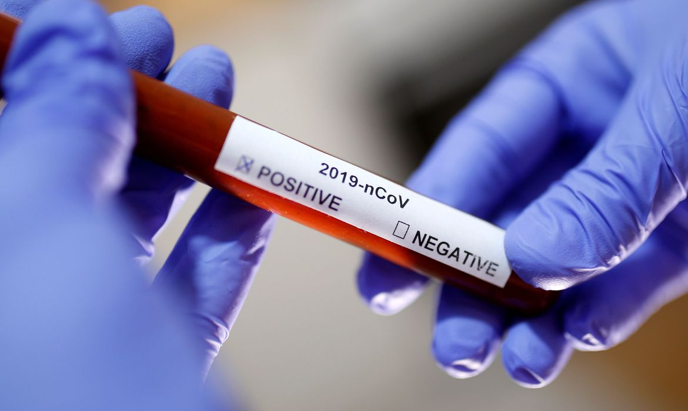
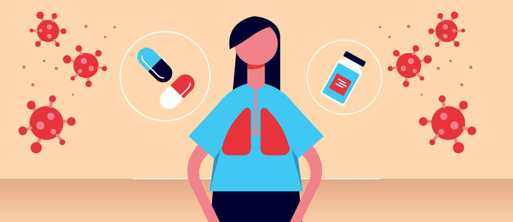

-
281 pacientes se recuperaram da Covid-19 no Paraná, diz Sesa
Por G1 PR 17/04/2020 - 15h57
-

Brasil bate novo recorde de mortes e casos em um dia
Por Jonas Valente 17/04/2020 - 16:00
-
Alemanha anuncia ter controlado covid-19
Por Radio France Internationale 17/04/2020
-
Isolamento social adia pico da COVID-19 em Minas e achata curva de
propagação
Por Déborah Lima 16/04/2020 - 17:55
-

Saiba quais são os cuidados para portadores de doenças respiratórias
Por Redação Folha Vitória 17/04/2020 - 06:16
-

O que se sabe sobre remédios e tratamentos da Covid-19
Por O Globo 14/04/2020 - 13:33